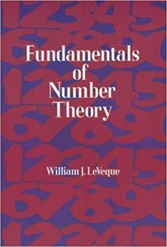

MATH 4400/6400: Number Theory
MWF, 10:10-11:00 AM, Boyd Graduate Studies Building, Room 302
M 1:25-2:15 (shared)
F 1:15-2:15
Course summary to date (reverse chronological order)
- 4/29 Proof that if there is a positive integer solution to the Pell equation, then there are infinitely many. There is a positive integer solution to the Pell equation.
- 4/26 The theorems of Roth and Hurwitz on Diophantine approximation (statements only). Square-triangular numbers, and the Pell equation $x^2-8y^2=1$. Diophantine approximation and "near misses" to the Pell equation $x^2-dy^2=1$.
- 4/24 Discussion of Diophantine approximation. Proof that if $\alpha$ is an irrational number in $[0,1]$, then for every $N \in \mathbb{Z}^{+}$, there is an element $a/q \in \mathfrak{F}_N$ with $|\frac{a}{q}-\alpha| \le \frac{1}{q(N+1)}$. If $\alpha$ is an irrational number, then for infinitely many positive integers $q$, there is an integer $p$ with $|\frac{p}{q}-\alpha| \le \frac{1}{q^2}$.
- 4/22 Proof of Conjecture 2 via geometry.
- 4/19 Two conjectures on Farey fractions: (1) If $a/b < c/d$ are consecutive in some Farey sequence $\mathfrak{F}_n$, then $bc-ad=1$. (2) If $a/b < c/d$ are consecutive, then the first fraction to come between them in a later Farey sequence is $\frac{a+c}{b+d}$, and this is the unique fraction in $\mathfrak{F}_{b+d}$ between them. Conjecture 2 implies Conjecture 1. The mediant $\frac{a+c}{b+d}$ lies between $\frac{a}{b}$ and $\frac{c}{d}$. Introduction of a geometric strategy to finish the proof of Conjecture 2.
- 4/17 Proof of Euler's theorem on the form of even perfect numbers. Euler's form for odd perfect numbers. Miscellaneous results known about perfect numbers. Proof that if $V(x)$ is the number of odd perfect numbers not exceeding $x$, then $V(x) \le x^{1/2}$. Statement of the Hornfeck--Wirsing theorem that eventually $V(x) < x^{\epsilon}$.
- 4/15 Discussion of the problem of determining if a given $\alpha \in \mathbb{Q}$ has the form $\sigma(N)/N$ for some positive integer $N$ (including proofs that $25/12$ and $29/12$ are not of that form). If $m > 1$ and $\sigma(N)/N = (m+1)/m$, then $m$ is prime and $N=m$.
- 4/12 Another proof of the infinitude of primes using Möbius pairs. Start of discussion of even perfect numbers.
- 4/10 Proof of the Möbius "inversion formula". Proof of our conjecture on the values of the Möbius function. Discussion of Dirichlet convolution (not examinable).
- 4/8 Proof that if $f, g$ are related by $g(n) = \sum_{d \mid n} f(d)$, and $g$ is multiplicative, then $f$ is multiplicative. Möbius pairs. Statement of the Möbius "inversion formula".
- 4/5 Midterm #2
- 4/3 Proof that if $f(n)$ is multiplicative, then $g(n) = \sum_{d \mid n} f(d)$ is also multiplicative. Discussion of the converse.
- 4/1 Paying off an outstanding debt: If p is an odd prime, then $\#\mathbb{Z}[i]/\langle(1+i)p\rangle \le 2p^2$. Introduction to arithmetic functions. If $f(n)$ is multiplicative, then $g(n) = \sum_{d \mid n} f(d)$ is multiplicative (statement only so far). Examples.
- 3/29 Review of the almost-proof from last class. Proof that $2m$ is a sum of four squares $\Rightarrow$ $m$ is a sum of four squares. Turning the almost-proof into a complete proof.
- 3/27 Proof of Thue's lemma in $\mathbb{Z}[i]$. New key lemma: For every prime $p$, there is an $\alpha \in \mathbb{Z}[i]$ with $N\alpha \equiv -1\pmod{p}$. Proof that for every prime $p$, at least one of $p, 2p, 3p, 4p$ is a sum of four squares.
- 3/25 Proof of Fermat's two-square theorem via Thue's lemma. Statement of the four square theorem. Reduction to the case of primes (from HW). Strategy for the proof. Statement of Thue's lemma in $\mathbb{Z}[i]$. Statement that the number of elements in $\mathbb{Z}[i]/\langle \mu\rangle$ is $N\mu$. Example of $\mu = 1+i$.
- 3/22 Definition of primes in $\mathbb{Z}[i]$. Precise statement of the unique factorization theorem in $\mathbb{Z}[i]$. First proof of Fermat's two-square theorem, via arithmetic in $\mathbb{Z}[i]$. Thue's lemma.
- 3/20 Completion of the proof of Bertrand's postulate (following Erdos). Start of discussion of Fermat's two square theorem. Basic arithmetic in $\mathbb{Z}[i]$ and the chain of reasoning leading to unique factorization.
- 3/18 Statement of Bertrand's postulate. Verification for $n\le 2^{12}$. Preparation for the proof.
- 3/8 The notation $f(x)\sim g(x)$, and restatement of the prime number theorem. Examination of absolute errors $\pi(x)-x/\log{x}$. Gauss's approximation $\mathrm{Li}(x) = \int_{2}^{x} dt/\log{t}$. The absolute errors $\pi(x)-\mathrm{Li}(x)$. Statement of the Riemann Hypothesis in terms of those errors. Existence of an analytic continuation of $\zeta(s)$. All zeros are negative even integers, or in the critical strip (nontrivial zeros). Riemann Hypothesis as the statement that all zeros in the critical strip are on the critical line. A version of Riemann's explicit formula.
- 3/6 Proof of the formula for the highest power of a prime dividing a factorial. The highest power of a prime dividing ${{2n} \choose {n}}$; analysis of the exponents. Proof that ${{2n} \choose {n}} \le (2n)^{\pi(2n)}$; deduction that $\pi(x) \ge c_1 x/\log{x}$ for all $x\ge 2$, for the specific value $c_1 = \log{2}/8$. Statement of the prime number theorem.
- 3/4 Proof that $\theta(x) \le (4\log{2}) x$ for all $x > 0$. Deduction that $\pi(x) \le c_2 x/\log{x}$ for all $x\ge 2$, for the specific value $c_2 = 2 + 8\log{2}$. Hence, "0% of the integers are prime." Towards Chebyshev's lower bound: Proof that ${{2n} \choose {n}} \ge 2^n$. The highest power of a prime dividing a factorial.
- 3/1 Definition of the Euler--Riemann function $\zeta(s)$, and its Euler factorization. The infinitude of primes from $\zeta(2) = \pi^2/6$. Start of discussion of Chebyshev's approach to studying the distribution of primes. Proof that $\theta(2n)-\theta(n) \le (\log 4) n$.
- 2/27 Review of proof there are infinitely many primes. Definition of "substantial" subsets of the positive integers; examples. Euler's proof that the prime numbers are a substantial set.
- 2/25 Completion of the proof of Explicit Gauss's Lemma. Kronecker's version of the Explicit Gauss Lemma. Deduction of QR! Discussion of topics for later in the course.
- 2/20 Completion of the proof of Gauss's Lemma. Generalized GL for any "half-set" mod $p$. Explicit Gauss lemma: If $p$ is an odd prime, $p\not\mid a$, and $a$ is odd, then $(a|p)=(-1)^{\sum_{0 < k < p/2} \lfloor ak/p\rfloor}$.
- 2/18 Review of Gauss's lemma. Proof that $(3|p) = 1$ when $p\equiv 1\pmod{12}$. Statement of Quadratic Reciprocity (QR). Examples. Lemma for Gauss's lemma (the $r_i$ are distinct).
- 2/15 Midterm #1
- 2/13 Data on when $\pm 2, \pm 3, \pm 5$ are squares modulo primes $p \le 200$. Conjectures. Proof that $(ab|p) = (a|p) (b|p)$. Gauss's lemma. Proof with Gauss's lemma that $(2|p)=1$ when $p\equiv \pm 1\pmod{8}$, and $(2|p)=-1$ when $p\equiv \pm 3\pmod{8}$.
- 2/11 Motivation for studying squares mod $p$ by wanting to solve quadratic equations. If $p$ is an odd prime, there are $\frac{p-1}{2}$ nonzero squares in $\mathbb{Z}_p$. Definition of the Legendre symbol $(a|p)$. Euler's criterion: $(a|p) \equiv a^{(p-1)/2}\pmod{p}$. Proof that $-1$ is a square in $\mathbb{Z}_p$ (with $p$ an odd prime) if and only if $p\equiv 1\pmod{4}$.
- 2/8 Proof that $\phi(mn)=\phi(m)\phi(n)$ via the isomorphism $U(\mathbb{Z}_{mn}) \cong U(\mathbb{Z}_m \times \mathbb{Z}_n)$. If $m$ and $n$ are relatively prime but $\gcd(\phi(m),\phi(n))>1$, then $\mathbb{Z}_{mn}$ is not cyclic. Proof that $U(\mathbb{Z}_{2^j p^k})$ ($p$ an odd prime) is not cyclic when $j>1$. Proof that $U(\mathbb{Z}_{2p^k})$ is cyclic, via the isomorphism $U(\mathbb{Z}_{2p^k}) \cong U(\mathbb{Z}_{p^k})$. Wrap up: $U(\mathbb{Z}_m)$ is cyclic if and only if either: (1) $m=1,2,4$, (2) $m=p^k$ for some odd prime $p$, (3) $m=2p^k$ for some odd prime $p$.
- 2/6 Proof that $U(\mathbb{Z}_{p^2})$ is cyclic for odd primes $p$. Proof that $U(\mathbb{Z}_{p^k})$ is cyclic for all odd primes $p$ and all positive integers $k$. The latter proof was in two parts: (a) finding an element of order $p-1$, (b) finding an element of order $p^{k-1}$.
- 2/4 Let $p$ be a prime; if $p_i^{e_i}$ is a prime power factor of $p-1$, then there are $p_i^{e_i} - p_i^{e_i-1}$ elements of $U(\mathbb{Z}_p)$ of order $p_i^{e_i}$. Deduction that $U(\mathbb{Z}_p)$ is a cyclic group. Proof that $U(\mathbb{Z}_{2^k})$ is not cyclic if $k\ge 3$; in fact, every element has order dividing $2^{k-2}$.
- 2/1 Basic definitions surrounding cyclic groups. Proof that if $g$ has order $m$, then the distinct powers of $g$ are $g^{0}, \dots, g^{m-1}$. Reformulation of basic question: For which $m$ is $U(\mathbb{Z}_m)$ cyclic? Numerical examples. If $a$ and $b$ have orders $m$ and $n$, and $\gcd(m,n)=1$, then $ab$ has order $mn$.
- 1/30 Proof that the number of elements of $\mathbb{Z}_m$ of order $d$ is $\phi(d)$, for every $d$ dividing $m$. Orders of elements in $U(\mathbb{Z}_m)$: several examples. Question: For which $m$ does $U(\mathbb{Z}_m)$ contain elements of every order dividing $\phi(m)$? Reformulation: For which $m$ does $U(\mathbb{Z}_m)$ contain an element of order $\phi(m)$?
- 1/28 If $x^n=\mathbf{1}$, and $x$ has order $d$, then $d \mid n$. Corollary: If $G$ is a finite abelian group of size $m$, then every $x \in G$ has order dividing $m$. Example: orders in $\mathbb{Z}_{12}$ under addition. Proof that $[a]$ has order $m/\gcd(a,m)$ in $\mathbb{Z}_m$ under $+$. Conjecture that the number of elements of $\mathbb{Z}_m$ of order $d$ is $\phi(d)$, for every $d$ dividing $m$.
- 1/25 Def. of an abelian group. Basic examples. If $G$ is a finite abelian group, say $|G|=n$, then $g^n = \mathbf{1}$ for each $g \in G$. Deduction of Euler's theorem: If $\gcd(a,m)=1$, then $a^{\phi(m)}\equiv 1\pmod{m}$. (So taking $m=p$ recovers Fermat's little theorem.) Definition of the order of an element in an abelian group. Examples.
- 1/23 Review of definition of $\mathbb{Z}_m$. Definition of $\gcd(\alpha,m)$ when $\alpha$ is an element of $\mathbb{Z}_m$. Definition of what it means to say $d \mid \alpha$, where $d$ is a divisor of $m$ and $\alpha$ is an element of $\mathbb{Z}_m$. Restatement of results on linear congruences in terms of $\mathbb{Z}_m$. Definition of units in $\mathbb{Z}_m$. Characterization of units in $\mathbb{Z}_m$. Theorem that $\mathbb{Z}_m$ is a field precisely when $m$ is prime. Definition of $\phi(m)$ as the nubmber of units in $\mathbb{Z}_m$.
- 1/16, 1/18 (substitutes)
- 1/14 Review of MATH 4000 facts about gcds. Formulas for $\gcd(m,n)$, $\mathrm{lcm}(m,n)$, and the number of divisors of $n$, in terms of the exponents $v_p(\cdot)$.
- 1/11 Proof of Euclid's lemma using LCMs. Restatement of unique factorization in terms of exponent sequences $\{v_p(n)\}$. Statement (and proof) that $m \mid n$ if and only if $v_p(m) \le v_p(n)$ for all primes $p$.
- 1/9 Discussion of syllabus. Start of discussion of unique factorization. Proof prime factorizations exist. Reduction of uniqueness to Euclid's lemma.
Course summary
Number theory is the study of of the positive integers 1, 2, 3, $\dots$ and associated objects. It is tempting to assume that something as simple as the counting numbers must be rather well understood. But this is far from the case! Indeed, number theory owes much of its charm to the wealth of easily-stated problems -- possible to explain to middle-school age children -- which have so far defied solution, despite hundreds of years of effort by the world's greatest mathematicians.
This course is designed to introduce you to the fundamental results, with particular attention paid to the pathbreaking accomplishments of the 18th and 19th centuries. We will begin by reviewing the theory of prime factorization and congruences that you were introduced to in MATH 4000. One of the central early topics in MATH 4000 is the study of linear congruences: $ax\equiv b\pmod{m}$. One of the major topics of this course will be the study of quadratic congruences. In particular, we will be interested in understanding the following problem: Given an integer $a$, characterize the primes $p$ for which $x^2\equiv a\pmod{p}$ has a solution. For instance if $a=3$, this is solvable when $p=11$ and $p=13$, but not when $p=5$ or $p=7$; what is the general rule? The answer will come out of a beautiful and deep result of Gauss, the law of quadratic reciprocity (which Gauss called the golden theorem and proved 8 different ways!).
More advanced topics will be discussed later in the course. For example, I hope to discuss Lagrange's four squares theorem, according to which every positive integer can be written as a sum of four integer squares; e.g., $$2019 = 35^2 + 28^2 + 3^2 + 1^2.$$ We may also talk about how the prime numbers are distributed on the real number line, and the rudiments of algebraic number theory (where one studies the system of "integers" belonging to a finite extension of the rational numbers).
Required textbook
-

Fundamentals of Number Theory
W.J. LeVeque
LeVeque's book covers all of the standard topics, covers them well, and is remarkably inexpensive. We won't follow the book very closely, but it's an excellent reference.
Exam dates
There are two in-class midterm exams as well as a final exam.
- Midterm #1: Friday, Feb. 15
- Midterm #2: Friday, April 5
- Final exam: Friday, May 3, 8:00 AM -- 11:00 AM (usual classroom)
No make-up exams will be given. The final exam is cumulative.
Homework/ Exams/ Grading
Your grade is made up of the following weighted components:
- Each midterm: 22.5% (total of 45%)
- Homework: 25%
- Final exam: 30%
HW assignments will contain problems required of all students, as well as starred problems required only for MATH 6400 students. MATH 4400 students may do these additional problems for extra credit.
You are expected to participate in class. In particular, attendance in this course is required. More than four unexcused absences may result in you being withdrawn from the course. Keep me posted whenever you have a conflict that requires you to miss class and this should not be an issue.
All exams are in-class, closed book, and closed notes.
Homework will be collected in class, once every week or two. Late homework will not be accepted. (If you have a need to turn in HW early, that can be arranged.) Your lowest HW score will be dropped at the end of the term.
On homework, collaboration is allowed and in fact is very much encouraged. Mathematics wouldn't be nearly as much fun if we couldn't talk about it with other people! However, copying (from a textbook or another student) and web searches are not allowed, and you must write your own final solutions independently. Keep in mind that by entering UGA, you have already agreed to abide by the UGA Honor code described in detail at https://honesty.uga.edu/Academic-Honesty-Policy/.
In practice, what this means that you may discuss homework problems and their solutions with your classmates, but you may not turn in a solution unless you understand it yourself. A reasonable rule of thumb is that you should be able to explain your solutions verbally to me (in all their gory detail) if requested to do
Special accommodations
Students with disabilities who may require special accommodations should talk to me as soon as possible. Appropriate documentation concerning disabilities may be required. For further information, please visit the Disabilities Resource Center page.
Disclaimer
The course syllabus is a general plan for the course; deviations announced to the class by the instructor may be necessary.